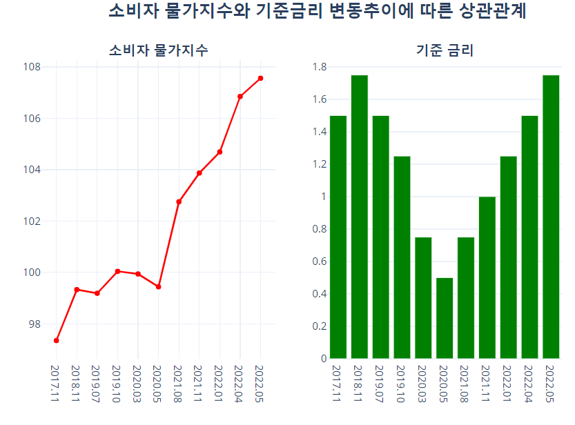
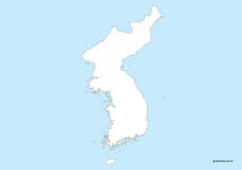

메인메뉴
PORTFOLIO
-

- 설명 -
기준금리 변화와 물가의 변동을 비교분석
파이썬 비교분석하여 결과값을 보여준다.
-역할: 데이터분석 및 결과도출- 사용기술 : python
- 프로젝트 기간 : 2021.08
- 설명 -
목소리 빅데이터를 머신/딥러닝을 통해 학습
다양한 표본과 비교해 결과를 보여준다
-역할: 데이터수집 및 결과도출- 사용기술 : python, R
- 프로젝트 기간 : 2021.08
- 설명 -
충남 제조업 데이터를 이용한 전북 제조업 성장 예측
웹페이지에서 다중회귀분석하여 결과값을 보여준다.
-역할: 데이터분석 및 결과도출- 사용기술 : excel, python
- 프로젝트 기간 : 2021.11~12